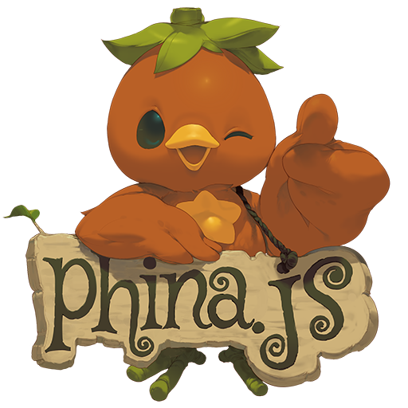

ロゴはphinajs.comから借用
はじめに
これまでphina.jsに関するいくつかの記事を投稿していますが、phina.js自体について書いていなかったので、ここで簡単に紹介したいと思います。
phina.jsについて
趣味でプログラミングをしている私が日々楽しんで使っている国産のjavascriptゲームライブラリです。以前からjavascriptでゲーム開発をしている方は知っているかもしれませんが、tmlib.js の後継ライブラリになります。とりあえずどのようなものか知りたい方には、以下の紹介記事が参考になるかと思います。
- 本日 JavaScript ゲームライブラリ『phina.js』をリリースしました! by phi さん
- phina.js - JavaScriptで楽しく簡単にゲームが作れるライブラリ by simiraaaa さん
- はじめてのphina.js – JavaScriptゲームライブラリを使ってみた！ by 株式会社LIG さん
phina.jsで作ることができるゲーム
端的に言うと、現時点では2Dゲーム ならジャンル問わず（やる気さえあれば）大抵のものを作ることが出来ると思います。実際に作られたゲームを見てみたいという方は、以下のサイトがおすすめです。
-
かちゃコム by utyo さん phina.jsで作られた様々なミニゲームがあります。どれも良く出来ていて熱中してしまいます。
-
Quest for the Tanelorn by minimo さん スーパーファミコン時代を彷彿させる2Dアクションゲームです。作り込みのレベルが高いです。
気に入っているところ
以下は個人の主観ですが、他のユーザーも少なからず感じているのではないかと思います。
同じ処理でも少ないコード量でコーディングできる
全てのゲームライブラリと比較したわけではありませんが、phina.js で書き慣れると、個人的には同様の処理を行う他のライブラリのコードが冗長に感じるようになりました。
ソースが読みやすい
phina.jsのソースの書き方を真似ることで、結果的に自分のコードも読みやすくなりました。
実行確認までのステップが短い
Web上でコーディングできるrunstantを使うことで、簡単に自分のプログラムの実行結果が確認できます。
配列やベクトルなどのコーディングする上でベースとなるクラスの機能拡張が充実している
これまでzennで書いた記事でも触れていますが、コーディングする上で細かな配慮がされた仕様になっています。
とにかく使ってみたい方へ
-
Githubのリポジトリに導入方法が記載されていますが、開発者向けの内容に近いので、その辺り不慣れな方には少し敷居が高く感じられるかもしれません。
-
一番簡単な方法は、runstant へのユーザー登録が必要ですが、runstantに用意されたテンプレートをForkすることです。
-
javascriptで作られていますので、Webブラウザと自分の好きなエディタさえあれば、複雑な環境構築の必要もなくゲーム開発を始めることができます。
オープンソースという魅力
- phina.jsはオープンソースプロジェクトであり、これまで有志により改良が重ねられてきています。個人的には、ゲーム開発に必要な基本機能は現バージョンでもひと通り揃っていると思っています。
- 近年は、事情により開発が進んでいない状態でしたが、今後開発を再開する予定であることが最近アナウンスされています。
- その開発については広く門戸が開かれており、誰でもオープンソースプロジェクトに貢献できる可能性があるというのが大きな魅力の１つと言えます。
質問など
- 個人的にphina.jsがオススメな理由の一つに、親切なサポート体制があります。
- Twitterで #phina_js タグをつけて質問したり、slackに参加して、使い方など疑問に思ったとを質問すれば、開発者の phiさんを始め、他のユーザーが優しく真剣に答えてくれます。
Tipsなど
まずどんなものか少しでも知ってもらうために、手前味噌ながらphina.js Tips集というものを書いていますので、こちらもよろしければご覧ください。
おわりに
- ゲームライブラリは実際に使ってみないとその良し悪しはわかりませんが、その中でもphina.jsは、比較的簡単にトライすることができるライブラリです。
- javascriptでのゲーム開発に興味がある方は、是非一度触ってみて色々と試して頂ければと思います。